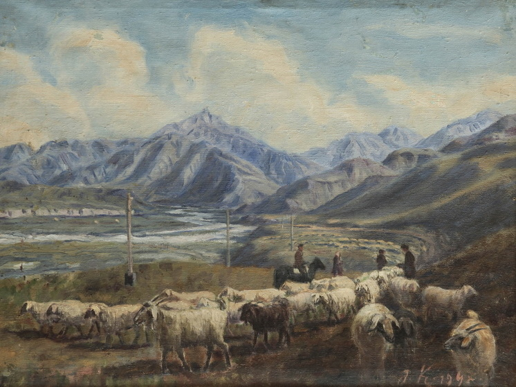

Абилхан Кастеев

Мәліметтер:
т. 1904, Қазақстан, Симиренчень

Абилхан Кастеев, Түрксіб теміржолының құрылыс, 1932, Майлы бояу.
Абилхан Кастеев – Қазақ ұлттық живописьінің атасы
Абилхан Кастеев (1904–1973) қазақ ұлттық живописьінің пионері ретінде танымал. Қазақстанның Чижин ауылында дүниеге келген Кастеевтің шығармалары Қазақстанның мәдени мұрасы мен тарихын көрсетіп, XX ғасырдың трансформацияларын да қамтиды.
Кастеев Алматыдағы Н. Гоголь атындағы өнер студиясында оқыды, оның жұмыстарында қазақ пейзажының сұлулығы, халықтың күнделікті өмірі және маңызды тарихи оқиғалар жиі бейнеленген. Оның өнері дәстүрлі қазақ тақырыптарын еуропалық живопись техникасымен үйлестіреді, бұл оның үлесін шын мәнінде ерекше етеді.